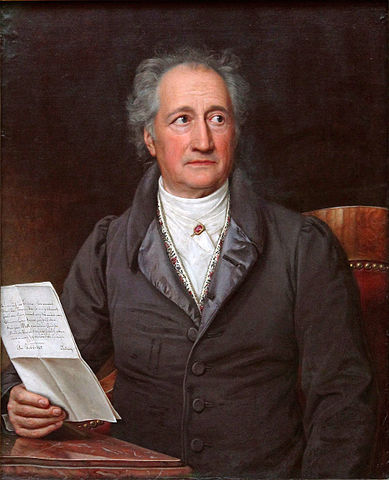

Răspândirea iluminismului
Cartea ca element principal
Curentul iluminist a cunoscut un real avânt, răspândindu-se spre sfârșitul secolului al XVIII-lea în întreaga Europă, dar și în America. Calea preferată de răspândire a constituit-o cartea, difuzarea scrierilor filosofilor iluminiști ilustrând rolul important al informării, al educației. Ideile iluministe pătrund în societate prin intermediul presei, al diferitelor broșuri, dar și prin opere de mare amploare, între care trebuie să menționăm celebra Enciclopedie iluministă. Enciclopedia franceză a apărut sub îngrijirea lui Denis Diderot și a lui Jean Le Rond d'Alembert, dar la alcătuirea ei și-au adus contribuția numeroase spirite iluministe ale vremii precum Voltaire sau J.J. Rousseau; lucrarea a întrunit în perioada 1751-1765 un număr de 17 volume publicate, ulterior ajungând la 35 de volume.
Interesul pentru lectură va duce la apariția librăriilor, a saloanelor de lectură și a bibliotecilor publice. Apar și se dezvoltă noi medii de socializare, precum academiile, cafenelele, saloanele, francmasoneria, reunind oameni cu preocupări și idealuri comune. Răspândirea iluminismului și a ideilor sale a fost favorizată de adevărata modă a folosirii limbii franceze de către elitele intelectuale și sociale ale vremii din întreaga Europă.
{kind=link}
Literatura iluministă
În ce privește literatura, gânditorii iluminiști au excelat și în acest domeniu, indiferent de genul abordat. Nume precum Volataire, J.J. Rousseau, Daniel Defoe, Jonathan Swift s-au întipărit adânc în istoria literaturii.
Scriitori francezi
Voltaire – pe numele său adevărat François Marie Arouet – a fost poet, romancier, eseist, dramaturg, istoric şi filosof, abordând genuri literare precum satira, epopeea, nuvela, romanul (cu precădere cel filosofic), teatrul, fiind chiar întemniţat în celebra Bastilia datorită versurilor sale politice. Pe lângă acestea ne-a rămas de la el o bogată corespondență cu diferite personalități ale vremii, corespondență ce ilustrează și ea, asemeni miilor de pagini ale operei sale, realitățile societății franceze din secolul al XVIII-lea. Dintre scrierile sale amintim Candid sau Optimismul, Zaïre, Tratat despre toleranță, Secolul lui Ludovic al XIV-lea, Scrisori filosofice ș.a.
Un alt francez iluminist demn de amintit aici este J.J. Rousseau, scriitor, pedagog, filosof și chiar compozitor. Sensibil și nestatornic din fire, se va dedica contemplării melancolice și solitare a lumii, consacrând această temă în istoria literaturii; el critică societatea contemporană și idealizează „starea naturală”, afirmând că oamenii sunt buni „de la natură”, se nasc liberi și egali, dar societatea este cea care îi corupe: „Totul este bun când iese din mâna Creatorului, totul degenerează în mâinile omului”. Operele sale Contractul social și romanul pedagogic Emil sau Despre educație (1762) vor zgudui societatea contemporană, atât cea laică, cât și cea bisericească.
Scriitori englezi
Literatura engleză iluministă a rămas celebră și este poate mult mai accesibilă lecturii prin operele lui Denis Defoe – Robinson Crusoe sau ale irlandezului Jonathan Swift – Călătoriile lui Gulliver. Totuși, Defoe are în portofoliul său și scrieri polemice precum Imn pentru stâlpul infamiei sau memorialistice – Jurnal din anul ciumei.
Scriitori germani
Accentul pus pe raționalism al iluminiștilor francezi va genera în literatura germană o mișcare de protest cunoscută sub numele de „Sturm und Drang” - furtună și avânt. Mișcarea va lua naștere atât ca răspuns la raționalismul iluminist și la amploarea pe care o luase literatura franceză, cât și ca un curent pentru susținerea și promovarea literaturii germane. Principalii reprezentanți sunt Johann Wolfgang von Goethe și Friedrich Schiller. Goethe cuprinde spiritul mișcării în opera sa intitulată Suferințele tânărului Werther. O altă operă celebră a sa este Faust, o dramă în cuprinsul căreia Goethe transpune idealurile, frământările și suferințele întregii omeniri.
Muzica și arta
Muzica din această perioadă își dezvăluie expresivitatea prin Don Giovanni a lui W.A. Mozart (pe un libret scris în limba italiană de Lorenzo da Ponte), operă tragi-comică despre care putem spune că este un adevărat „discurs” muzical în favoarea libertății umane.

.jpg#/media/File:Goethe_(Stieler_1828).jpg){kind=link}
Spiritul iluminist intersectează și domeniul artelor, apărând în această perioadă numeroase monumente de artă.
Neoclasicismul
Curentul neoclasicismului apare ca răspuns la ideile iluminiștilor, impunând ca normă artistică rigoarea și întoarcerea la formele clasice, greco-romane. Dintre reprezentanții de seamă ai neoclasicismului amintim în pictură pe Jacques-Louis David, în sculptură pe Antonio Canova, în arhitectură pe Claude Nicolas Ledoux, Étienne-Louis Boullée și Jean-Jacques Lequeu.
Opinia publică din perioada iluminismului
Delimitarea tot mai clară a vieții publice de cea privată este tributară societății moderne, luând amploare deja spre sfrârșitul secolului al XVII-lea și atingând apogeul în secolul al XVIII-lea. Dacă statul prin monarh, administrație sau armată reprezintă o autoritate publică, se încearcă tot mai mult o departajare de domeniul public și dezvoltarea noțiunii de privat, particular, intim, aspect al vieții care să nu mai aibă legătură cu obligațiile față de societate.
Problemele societății precum guvernarea, armata, economia, finanțele, raporturile cu celelalte state, erau până la momentul respectiv apanajul camerei de consiliu a monarhului și a miniștrilor, însă de acum devin tot mai mult obiectul dezbaterilor publice. Conferințele și întrunirile publice, cafenelele, cluburile și societățile literare, bibliotecile, lojile masonice vor antrena în domeniul public tot mai mulți oameni, de la elitele intelectuale la publicul larg. Apariția litografiei în 1796 (Alois Senefelder) va crește interesul pentru tipărirea și difuzarea cărților, va duce la creșterea tirajului cărților și al ziarelor și, implicit, la scăderea prețurilor. Accesul tot mai mare la educație și cultură, creșterea posibilităților de întrunire în spațiul public, vor duce la apariția a o serie de idei și păreri diferite de cele oficiale, ceea ce va constitui opinia publică, care nu se va feri să critice societatea și chiar politica regală.
Se consolidează ceea ce noi numim astăzi spiritul public, membrii comunităților reunindu-se în diferite acțiuni comune menite să îi ajute pe aceia dintre ei care erau fără adăpost sau aveau posibilități materiale mai reduse. Astfel, apar și se înmulțesc societățile de ajutorare și operele (întruniri, baluri) de caritate sau filantropice. Statul s-a implicat și el în protecția socială a persoanelor sărace, a văduvelor sau orfanilor, construind numeroase adăposturi pentru cei săraci, spitale, orfelinate. Biserica a început să organizeze diferite întruniri colective, precum confreriile sau pelerinajele la locurile sfinte; de asemenea, a implicat activ membrii săi în numeroase acțiuni de binefacere.
Zi de zi, posibilitățile de întrunire și de socializare erau înlesnite de numeroasele cafenele, culburi, saloane de lectură, biblioteci, expoziții, serbări și spectacole etc., membrii societății având astfel numeroase prilejuri de a se întruni și de a comunica, schimbând păreri potrivit intereselor fiecăruia.